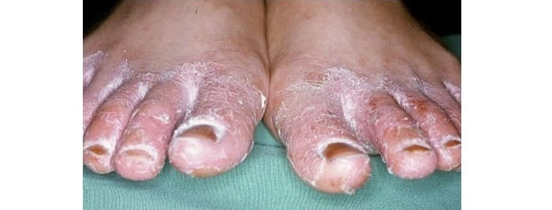

Artikel, den
über 16 730 Benutzer gelesen haben
über 16 730 Benutzer gelesen haben
Heute besprechen wir das Problem des Pilzes an den Zehen. In der Regel, setzt der Pilz unsere Zehen, aber nur selten unsere Finger. Oft entsteht der Pilz nach dem Besuch öffentlicher Plätze, wo man gezwungen ist, barfuß zu gehen — Saunas und Baderäume.
Pilz kann auch bei der Arbeit im Büro erscheinen. An dem Arbeitsplatz verbringt man 8-12 Stunden in den geschlossenen Schuhen, beginnen die Füße zu schwitzen, infolgedessen entstehen krankheitserregende Keime, die sich unter günstigen Auspizien vermehren. Jeden Tag kann die Situation nur schlechter werden. Dabei muss man unbedingt Komplikationen vermeiden.
Eine der Einwohnerin unserer Stadt hatte auch dieses Problem. Die Entwicklung des Pilzes begann mit dem Juckreiz zwischen den Zehen, nach einiger Zeit bildeten sich die Blasen. Der Fußpilz entwickelte sich sehr schnell.
Natürlich besuchte sie die Ärzte, aber die Behandlung hat nichts gebracht. Außerdem, entstand auch der Pilz an den Füssen. Und dann begannen die Beine zu schwellen und weh zu tun. Sie wandte sich an mich und ich verwendete in diesem Fall ein geprüftes Volksmittel.
Ich versuchte sehr viele Rezepturen nach den Volksvorschriften. Viele davon sind nutzlos, aber es gibt auch wertvolle. Hier ist einer davon. Der Ansatz von Kräutern innerlich anzuwenden: Kletterblatt, Beifuß, Wegerichkraut, Schafgarbe. Am Abend eine Teelöffel dieser Zusammensetzung mit einem Glas Wasser aufbrühen, und am Morgen auf nüchternen Magen 100 g vom Ansatz zu trinken.
Ansatz von Kräutern kann man für drei Tage vorbereiten, im Kühlschrank aufbewahren und dreimal täglich vor der Mahlzeit trinken. Diese Tinktur in größeren Umfängen auch für Fußwannen zu verwenden. Halten Sie die Füße in diesen Wannen vor dem Schlafengehen. Nach dieser Prozedur reinigen Sie Ihre Fersen, schneiden Sie die Nägel ab, reiben Sie sie trocken. Morgens spülen Sie die Füße mit kaltem Wasser ab, zwecks Verbesserung der Blutzirkulation.
Im Ergebnis dieser Behandlung können Sie die Verbesserungen bemerken, aber das reicht nicht um sich vom Pilz für immer zu befreien. Deswegen wollte ich dieser Frau mit einer geprüften Methode helfen und wir bestellten zusammen die gegen Pilz. Dank meinen Empfehlungen hat sie den Pilz in zwei Wochen geheilt.
Hier ist einfaches, aber wirksames Mittel. Es ist leichter, eine Erkrankung vorzubeugen, als sie zu heilen, es bezieht sich besonders auf die Schädigungen der Haut von den Zehen und Füßen. Beim Besuchen öffentlicher Plätze wie Saunas, Bassins und Badewannen, verwenden Sie Gummischuhe. Nach dem Besuch dieser Plätze waschen Sie sorgfältig Ihre Beine mit der Seife. Diese einfachen Methoden der Prophylaxe helfen Ihnen sich vom Pilz zu schützen.
Außer der Bearbeitung der Füße soll man auch regelmäßig die Schuhe bearbeiten. Der Pilz kann in den Schuhen leben und dann, im Fall der Ausnutzung der Schuhe, werden Sie wieder mit den überlebenden Sporen infiziert.Die Schuhe bearbeitet man mit 25 prozentigem Formalinlösung. Man soll die Schuhe im inneren reiben und den Lappen in den Schuhen liegen lassen. Die Schuhe in eine Tüte hineinlegen und dicht verbinden. Und so liegen lassen mindestens auf zwei Tagen. Danach während drei Tage die Schuhe lüften, um den Geruch von Formalin zu entfernen.
Die Schuhe kann man auch mir 1 prozentiger Lösung von Chlorhexidinum bearbeiten, dann beträgt die ganze Prozedur nur ein Paar Stunden. Oder benutzen Sie 40 prozentiges Essigwasser, man kann es aus Essigessenz vorbereiten.
Das einfachste ist am häufigsten das beste und wirksamste. Im Fall des Pilzes hat man heute keine dringende Notwendigkeit etwas zu suchen und zu trinken. Es ist genug einfach die Füße jeden Abend mit einfacher Seife zu waschen, und danach mit der einreiben. Das ist alles! Innerhalb ein Paar Wochen «verbrennt» der Pilz. Das können schon zehn Leute beweisen, die mir Dankesworte geschrieben haben.
Ich habe alles erzählt, was ich über Pilz wusste und auch davon wie ich ihn bekämpft habe. Sie können jetzt meine einfache Empfehlungen benutzen, die Sie von der Erscheinung vom Pilz retten können, und meine persönliche Empfehlung die hilft wirklich! GESUNDHEIT!
Liebe Freunde! Wir bitten Sie, an unserer Umfrage teilzunehmen, damit wir verstehen können, welche Behandlungsmethoden des Fußpilzes Sie verwendet haben und was Sie vielleicht den anderen empfehlen können.
Was haben Sie verwendet und was Sie gegen Fußpilz empfehlen können?
Anonyme Umfrage
Stimmen von
Kommentare zum Artikel:
Wir bitten inständig ohne Schimpfwörter und Werbung schreiben. Danke!
Angela
Mich interessiert die Frage, gehört sehr trockene Haut an den Fersen und Zehenkuppen und kleine Risse zu den Pilzerkrankungen? Keine Super-Hautnahrungscremen und Fußwannen halfen mir, jetzt habe ich vor die Salbe gegen Pilz zu versuchen -vielleicht hilft sie...
Dina
Gegen Pilz hat mir schon diese Spray geholfen. Ich habe sie vor kurzem bestellt. Früher verwendete ich eine andere Spray, aber sie konnte nicht mein Problem bekämpfen. ist aber ein sehr wirksames Mittel
Alise
Ich habe gehört, dass Propolis sehr gut hilft gegen Pilz, deswegen, als ich die Propolis in der Zusammensetzung der Spray gesehen hatte, habe ich sofort bestellt.
Angeline
Mädchen, schreibt bitte was über eure Ergebnisse. Ich habe schon so viele Mittel probiert, aber nichts hilft. Ich will nicht eine weitere nutzlose Spray bekommen.
Gast
Ich habe was zu erzählen! Gelbe Flecke verschwunden, die Haut ist weicher und dieser Juckreiz ist auch verschwunden. Also inzwischen bin ich sehr zufrieden.
Martha
Danke schön! Ich habe ja Angst, aber ich will es probieren. Vielleicht hilft es mir.
Gast
Ich habe was, es ist dem Pilz ähnlich. Ich weiss nicht soll ich die Spray bestellen oder nein. Vielleicht ist es nicht diese Spray.
Befreien Sie sich gegen Pilz
ein für
allemal
Statistik der Seite
| Besucher für heute: | Personen |
| Jetzt auf der Seite: | Personen |
| Die Spray bestellt: | Personen |